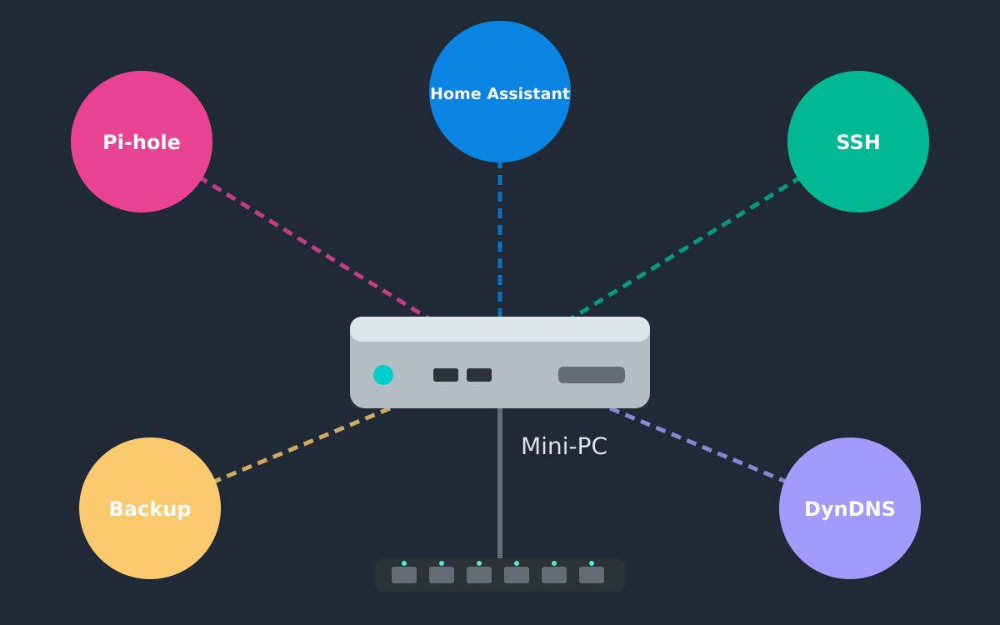

{kind=link}

Hardware
I use a Mini PC with the following specifications:
- CPU: [Specific model to be added]
- RAM: 16 GB
- Storage: [Capacity and type to be added]
- Network:
- Gigabit Ethernet
- Wake on LAN (WoL) support
- Wi-Fi 6 or better
Most thin clients or mini PCs would work well for this purpose.
Note: A Raspberry Pi was too slow for my needs.
Operating System
I run Ubuntu MATE on my homeserver.
Software
Currently Running
Services I currently run on my homeserver:
- SSH / vim: Remote access and administration
- Pi-hole: Network-wide ad blocking
- Home Assistant (Docker): Home automation platform
- DuckDNS.org: Dynamic DNS service for external access to my homeserver
Ideas for Future Implementation
- Operating System: Unraid
- Media Management: Immich - Image and video management
- Knowledge Base: Kiwix - Offline Wikipedia
- Password Management: vaultwarden - Bitwarden-compatible server
- Network: OPNsense - Firewall and router
- Calendar/Contacts: Baikal server
- File Storage: ownCloud / Nextcloud / Seafile with Samba
- Media Server: Jellyfin / Emby / Plex
- VPN: WireGuard / OpenVPN
- DNS Server: Unbound
- Reverse Proxy: Nginx / Traefik
- Monitoring: Prometheus / Grafana
- Backup: Borg / Restic
- Containerization: Docker / Podman
- Virtualization: Proxmox / KVM
Configuration
Automatic Updates
Install and configure unattended-upgrades:
sudo apt install unattended-upgrades
sudo dpkg-reconfigure --priority=low unattended-upgrades
SSH Hardening
# Allow SSH access via public key authentication:
ssh-copy-id username@your-server-ip
# Disable password authentication for improved security:
sudo vim /etc/ssh/sshd_config
# Set the following options:
# PasswordAuthentication no
# PubkeyAuthentication yes
sudo systemctl reload sshd